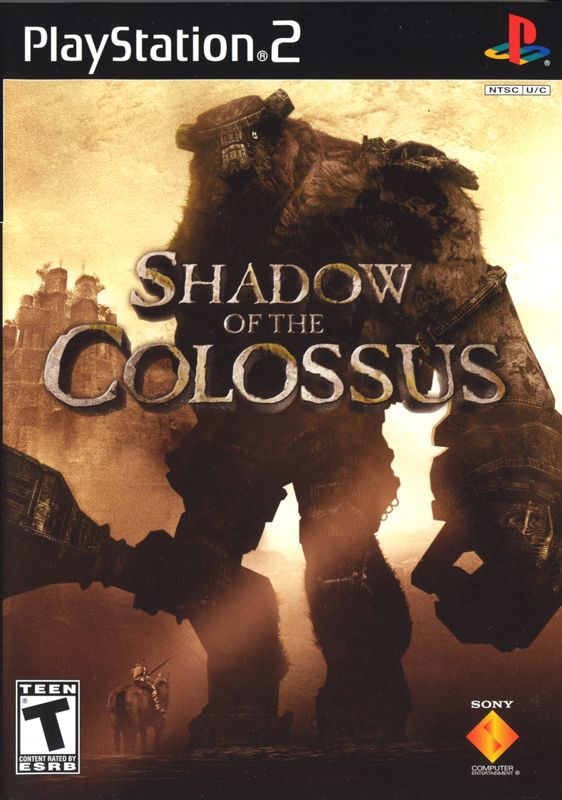

Shadow of the Colossus, lançado no Japão como Wanda and the Colossus, é o segundo jogo da Team ICO. Foi lançado inicialmente em outubro de 2005 na América do Norte e no Japão, e posteriormente na Europa e na Austrália em fevereiro de 2006.
Embora compartilhe muitos elementos estilísticos, estéticos e atmosféricos com ICO , a essência da jogabilidade de Shadow of the Colossus é bastante diferente. O jogo se concentra em um jovem, conhecido pelo público apenas como Wander (ou "o Andarilho"), que tem a missão de encontrar e matar dezesseis colossos que residem em uma vasta extensão de terra desolada , na esperança de ressuscitar uma garota sacrificada chamada Mono.
Shadow of the Colossus teve uma cobertura da mídia significativamente maior do que ICO , em grande parte devido a uma extensa campanha de marketing viral que ajudou a disseminar o conceito e o estilo únicos do jogo na comunidade gamer por meio do boca a boca. O jogo vendeu bem, chegando a entrar na coletânea "Greatest Hits" do PlayStation 2 no ano seguinte ao seu lançamento e recebeu inúmeros prêmios por sua jogabilidade, trilha sonora, direção de arte, animação e qualidade geral.
O jogo foi relançado juntamente com ICO para PlayStation 3 em 27 de setembro de 2011, nas regiões NTSC, como The ICO and Shadow of the Colossus Collection.